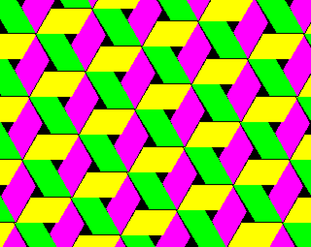
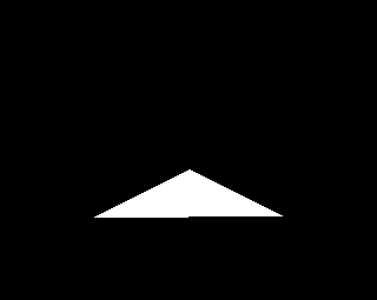

Filled primitives - 489 bytes (2.9%)
- §1. Plot a filled parallelogram and finish PLOT
- §2. plotParallelogramFilled
- §3. Plot a filled triangle and finish PLOT
- §4. Plots a filled parallelogram
- §5. Plot a filled triangle
- §6. fillTriangleRowFromLeftToRight
- §7. Sorts three points, then plots a triangle with a flat top or bottom edge
- §8. Draw a flat based (or flat topped) triangle
- §9. makeErrorTermNegative
- §10. Update the error term then update the left and right extents for the row
- §11. Update the left and right extents of the current row based on the current point on line X
- §12. Sort two points, sorting by row first then column
§1. Plot a filled parallelogram and finish PLOT.

.plotParallelogramFilled = $8e5b JSR .plotParallelogramInternal JMP .setGraphicsCursorPositionAndFinishPLOT
§3. Plot a filled triangle and finish PLOT.
Triangles are reimplemented here to add the fill pattern ability. It also fixes some questionable rasterisation of the original OS routine. In particular, the following triangle draws a better base edge with GXR enabled than without: 10 MODE 2 20 MOVE 119*8,72*4 30 MOVE 40*8,71*4 40 PLOT 85,80*8,111*4 Note that the left vertex is one pixel lower than the right vertex. This example is from the roof of the Witch's House from the game Citadel (See http://www.bbcmicro.co.uk/game.php?id=290 ). Firstly the regular MOS triangle routine:
Secondly the GXR triangle routine:

.plotTriangleFilled = $8e61 JSR .plotTriangleInternal JMP .setGraphicsCursorPositionAndFinishPLOT
§4. Plots a filled parallelogram.
Specified by three vertices of the parallelogram: - old graphics cursor position - current graphics cursor position - plot parameter point The fourth vertex is calculated from these three. The four vertices are sorted from the bottom up. Drawn from the bottom up in three parts: 1. Bottom triangle (with flat top edge) 2. Centre parallelogram (with flat top and bottom edges) 3. Top triangle (with flat bottom edge) e.g. ##### <--- workspaceABCD #### # #### # #### # #### # #### # #### # #### # #### 3. # #### # #### # old graphics ---> ####---------------------------------------# cursor # # # # # 2. # # # #---------------------------------------#### <--- PLOT parameter # #### # #### # #### # 1. #### # #### # #### # #### # #### # #### # #### graphics ---> ##### cursor
.plotParallelogramInternal = $8e67 LDX #1 loop counter LDY #0 This calculates the fourth vertex of the parallelogram from the other three: workspaceABCD = PLOT parameter - graphics cursor + old graphics cursor Loops twice, first with Y=0 (X coordinate) and then with Y=2 (Y coordinate) - SEC } LDA .vdu25ParameterXLow,Y } SBC .vduGraphicsCursorPixelsXLow,Y } STA .vduWorkspaceA,Y } workspaceAB = PLOT param - } graphics cursor LDA .vdu25ParameterXHigh,Y } SBC .vduGraphicsCursorPixelsXHigh,Y } STA .vduWorkspaceB,Y } CLC } LDA .vduWorkspaceA,Y } ADC .vduOldGraphicsCursorPixelsXLow,Y } STA .vduWorkspaceA,Y } workspaceAB += old graphics cursor LDA .vduWorkspaceB,Y } ADC .vduOldGraphicsCursorPixelsXHigh,Y } STA .vduWorkspaceB,Y } LDY #2 DEX BPL - The next code sorts the four points of the parallelogram vertically: XY = SORT(old, current) .gxrTemp1 = X .gxrTemp1 is the index to the smaller Y coordinate of old and current, Yreg is the larger XY = SORT(param, Y) .gxrTemp2 = X .gxrTemp2 is the index to the smaller Y coordinate of param and Yreg, Yreg is the larger XY = SORT(workspaceA, Y) .gxrTemp4 = Y .gxrTemp4 is the index to the larger Y coordinate of workspaceA and Yreg XY = SORT(gxrTemp2, X) .gxrTemp3 = Y .gxrTemp3 is the index to the larger Y coordinate of .gxrTemp2 and Xreg Y = .gxrTemp1 then calls .sortThreePointsAndPlotFlatEdgedTriangle which completes the process using two more SORT calls. [NOTE: For fewer comparisons (i.e. using 5 SORT calls total instead of 6), see https://stackoverflow.com/questions/6145364/sort-4-number-with-few-comparisons ] LDY #.vduOldGraphicsCursorPixelsXLow - .vduVariablesStart } sort positions X and Y LDX #.vduGraphicsCursorPixelsXLow - .vduVariablesStart } so that X is the offset to JSR .gxrSortPointsXY } the point with the STX .gxrTemp1 } smallest Y coordinate LDX #.vdu25ParameterXLow - .vduVariablesStart } JSR .gxrSortPointsXY } STX .gxrTemp2 } LDX #.vduWorkspaceA - .vduVariablesStart } JSR .gxrSortPointsXY } STY .gxrTemp4 } LDY .gxrTemp2 } JSR .gxrSortPointsXY } STY .gxrTemp3 } Step 1. Draw bottom triangle (with flat top edge) LDY .gxrTemp1 } JSR .sortThreePointsAndPlotFlatEdgedTriangle Step 2. Draw centre parallelogram (with flat top and bottom edges) LDA .gxrTemp4 STA .gxrScratchspace1 LDX #.line2StartPointX - .vduVariablesStart JSR .lineInitialisation The line initialisation sets up line 2 variables: .line2StartPointX: initial and current point X [2 bytes] .line2StartPointY: initial and current point Y [2 bytes] .line2AbsDeltaX : abs(deltaX) [2 bytes] .line2AbsDeltaY : abs(deltaY) [2 bytes] .line2ErrorTerm : Bresenham error term [2 bytes] .line2Signs : signs of deltaY (top bit) and deltaX (bit 6) [1 byte] LDY .gxrScratchspace2 middle point JSR .drawFlatParallelogram Step 3. Draw top triangle (with flat bottom edge) LDY .gxrTemp3 LDA .gxrTemp4 STA .gxrScratchspace2 LDX #.line3StartPointX - .vduVariablesStart JSR .drawFlatBasedTriangleInternal Draw final row JMP .fillTriangleRowFromLeftToRight
Triangles are drawn in two halves. First from the bottom to the middle point with a flat edge. Then from the flat middle edge up to the peak at the top. -- <- top point --- -- - minor line -> -- - -- - --second- -- half - -- - middle point -> ############# # # # first # <- main line ('line 3') # half # goes all the way to the top point # # # # minor line -> # # # # # # # # # # # # <- bottom point
.plotTriangleInternal = $8ee1 LDY #.vduOldGraphicsCursorPixelsXLow - .vduVariablesStart } LDX #.vduGraphicsCursorPixelsXLow - .vduVariablesStart } sort positions by Y then X JSR .gxrSortPointsXY STY .gxrTemp3 LDY #.vdu25ParameterXLow - .vduVariablesStart draw bottom half from lowest JSR .sortThreePointsAndPlotFlatEdgedTriangle point up to the flat base LDA .gxrTemp3 top point JSR .drawFlatBasedTriangle draw top half from the flat base to top point fall through... (to draw final row)
§6. fillTriangleRowFromLeftToRight.
.fillTriangleRowFromLeftToRight = $8ef6 LDY #.triangleRowLeftPointX - .vduVariablesStart LDX #.triangleRowRightPointX - .vduVariablesStart JMP .setMasksAndFillRow
§7. Sorts three points, then plots a triangle with a flat top or bottom edge.
On Entry: Xreg and Yreg are workspace offsets to two coordinates .gxrTemp3 is the offset to a third coordinate, which must be >= (Yreg offset coordinate) On Exit: Y: index to middle point
.sortThreePointsAndPlotFlatEdgedTriangle = $8efd Sort three points JSR .gxrSortPointsXY STX .gxrTemp1 .gxrTemp1 = lower point, Yreg = higher point LDX .gxrTemp3 compare Yreg with third coordinate JSR .gxrSortPointsXY STY .gxrTemp3 STX .gxrTemp2 The three values are sorted now: .gxrTemp3 is the highest point of original Xreg,Yreg and .gxrTemp3 .gxrTemp2 is the middle point of original Xreg,Yreg and .gxrTemp3 .gxrTemp1 is the lowest point of original Xreg,Yreg and .gxrTemp3 Copy the lowest point to .triangleRowLeftPointX/Y and .triangleRowRightPointX/Y. These will track the left and right edge points for the current row. LDY .gxrTemp1 LDX #$FC loop counter ($FC,$FD,$FE,$FF) - LDA .vduVariablesStart,Y } STA .triangleRowLeftPointX - $FC,X } store point in STA .triangleRowRightPointX - $FC,X } .triangleRowLeftPointX/Y and INY } .triangleRowRightPointX/Y INX } BNE - } Initialise main line ('line 3') variables (see diagram below) LDY .gxrTemp1 bottom point LDA .gxrTemp3 top point STA .gxrScratchspace2 LDX #.line3StartPointX - .vduVariablesStart JSR .lineInitialisation The line initialisation sets up line 3 variables: .line3StartPointX: initial and current point X [2 bytes] .line3StartPointY: initial and current point Y [2 bytes] .line3AbsDeltaX : abs(deltaX) [2 bytes] .line3AbsDeltaY : abs(deltaY) [2 bytes] .line3ErrorTerm : Bresenham error term [2 bytes] .line3Signs : signs of deltaY (top bit) and deltaX (bit 6) [1 byte] LDY .gxrTemp1 bottom point LDA .gxrTemp2 middle point JSR .drawFlatBasedTriangle draw bottom half of triangle LDY .gxrTemp2 middle point, ready to draw top half RTS
§8. Draw a flat based (or flat topped) triangle.
Coordinates have been pre-sorted into top, middle and bottom points of the original triangle. On Entry: A: index of vduVariable for middle point Y: index of vduVariable for bottom (start) point .line3*: line variables hold the details for the main line -- <- top point --- -- - minor line -> -- - -- - -- - -- - -- - 'A' register, the index of the middle point -> ############# # # # # <- main line (aka 'line 3') # # goes all the way to the top point # # # # minor line -> # # # # # # # # # # # # <- 'Y' register, the index of the current point, starting at the bottom
.drawFlatBasedTriangle = $8f3c STA .gxrScratchspace1 store end of minor line index LDX #.line2StartPointX - .vduVariablesStart where the minor line initialisation results will go .drawFlatBasedTriangleInternal = $8f41 JSR .lineInitialisation The line initialisation sets up line variables for the minor line, (either line 2 or 3, as specified by the X register). For regular filled triangle plotting, this is line2, For top half of a parallelogram this is line3. Assuming line 2, these variables are set up: .line2StartPointX: initial and current point X [2 bytes] .line2StartPointY: initial and current point Y [2 bytes] .line2AbsDeltaX : abs(deltaX) [2 bytes] .line2AbsDeltaY : abs(deltaY) [2 bytes] .line2ErrorTerm : Bresenham error term [2 bytes] .line2Signs : signs of deltaY (top bit) and deltaX (bit 6) [1 byte] LDY .gxrScratchspace1 get middle point index [NOTE: cheeky little entry point for drawing a parallelogram with flat top and bottom edges using the same algorithm as drawing the triangle with a single flat edge. This code can actually draw a trapezium with flat top and bottom edges, but in practice is only used for a triangle or a parallelogram.] .drawFlatParallelogram = $8f47 STY .vduTempStoreDB remember current point index .drawFlatTriangleLoop = $8f49 Check to see if we are done LDA .vduVariablesStart + 2,Y } CMP .line1AbsDeltaY } BNE + } if (minor line current Y == middle } point Y) then branch (finished } drawing) LDA .vduVariablesStart + 3,Y } CMP .line1AbsDeltaY+1 } BEQ .finishedDrawingTriangle } + LDX #.line2StartPointX - .vduVariablesStart given the current point for the minor line, update it until about to move to a new row JSR .updatePointOnLineXUntilReadyToMoveToNextRow and update the current left or right point for the row LDX #.line3StartPointX - .vduVariablesStart given the current point for the main line, update it until about to move to a new row JSR .updatePointOnLineXUntilReadyToMoveToNextRow and update the current left or right point for the row JSR .fillTriangleRowFromLeftToRight fill current row from left point to right Move to the first point on the next row for each line (having got ready for that before the fill above) LDX #.line2StartPointX - .vduVariablesStart JSR .lineMoveToNextPixel move to next point on line 2 (which moves to a new row) LDX #.line3StartPointX - .vduVariablesStart JSR .lineMoveToNextPixel move to next point on line 3 (which moves to a new row) LDX #.line2StartPointX - .vduVariablesStart LDY #.line3StartPointX - .vduVariablesStart JSR .sortCoordinatesXYByColumn sort to make X the left point, Y the right point Store the new row's left and right points in triangleRow[Left/Right]Point Remember X (the left point) for later STA .gxrScratchspace3 [NOTE: redundant] TXA PHA remember X LDA .gxrScratchspace3 [NOTE: redundant] First store the right point (indexed by Y) LDX #$FC loop counter ($FC,$FD,$FE,$FF) - LDA .vduVariablesStart,Y } copy right point STA .triangleRowRightPointX - $FC,X } store in .triangleRowRightPointX/Y INY } INX } BNE - } Recall X (the left point) STA .gxrScratchspace3 [NOTE: redundant] PLA TAX restore X LDA .gxrScratchspace3 [NOTE: redundant] Lastly store the left point (indexed by X) LDY #$FC loop counter - LDA .vduVariablesStart,X } STA .triangleRowLeftPointX - $FC,Y } copy left point INX } store in .triangleRowLeftPointX/Y INY } BNE - } LDY .vduTempStoreDB recall current point index JMP .drawFlatTriangleLoop .finishedDrawingTriangle = $8fa4 We continue to update the line 2 point to get the row span for the final row LDA #.line2StartPointX - .vduVariablesStart LDX .gxrScratchspace1 JSR .updateToGetRowSpan We continue to update the line 3 point to get the row span for the final row LDY .vduTempStoreDB LDA #.line3StartPointX - .vduVariablesStart LDX .gxrScratchspace2 .updateToGetRowSpan = $8fb3 STA .vduTempStoreDE LDA .vduVariablesStart + 2,X CMP .vduVariablesStart + 2,Y BNE + if (Y coordinates don't match) then branch LDA .vduVariablesStart + 3,X CMP .vduVariablesStart + 3,Y BEQ .updateLeftAndRightTriangleRowPoints if (Y coordinates match) then branch + LDX .vduTempStoreDE JMP .updatePointOnLineXUntilReadyToMoveToNextRow
.makeErrorTermNegative = $8fca Push X (preserving A) STA .gxrScratchspace3 } TXA } push X leaving A untouched PHA } [NOTE: wasteful. No need to } preserve A!] LDA .gxrScratchspace3 } JSR .lineMoveToNextPixel move to next point on line X Pop X (preserving A) STA .gxrScratchspace3 } PLA } pop X leaving A untouched TAX } [NOTE: wasteful. No need to } preserve A!] LDA .gxrScratchspace3 } fall through...
§10. Update the error term then update the left and right extents for the row.
On Exit: Preserves X
.updatePointOnLineXUntilReadyToMoveToNextRow = $8fdd LDA .vduVariablesStart + 9,X check error term BPL .makeErrorTermNegative if (error term >= 0) then branch which updates the error term until it becomes negative fall through...
§11. Update the left and right extents of the current row based on the current point on line X.
if (lineCurrentX < triangleRowLeftPoint) { triangleRowLeftPointX = lineCurrentX return } if (lineCurrentX > triangleRowRightPointX) { triangleRowRightPointX = lineCurrentX }
.updateLeftAndRightTriangleRowPoints = $8fe2 LDA .vduVariablesStart,X CMP .triangleRowLeftPointX LDA .vduVariablesStart + 1,X SBC .triangleRowLeftPointX+1 BPL .testRightPoint if (lineCurrentX >= triangleRowLeftPointX) then branch LDA .vduVariablesStart,X STA .triangleRowLeftPointX LDA .vduVariablesStart + 1,X STA .triangleRowLeftPointX+1 triangleRowLeftPointX = lineCurrentX RTS .testRightPoint = $8ffd LDA .triangleRowRightPointX CMP .vduVariablesStart,X LDA .triangleRowRightPointX+1 SBC .vduVariablesStart + 1,X BPL .return18 if (triangleRowRightPointX >= lineCurrentX) then branch (return) LDA .vduVariablesStart,X STA .triangleRowRightPointX LDA .vduVariablesStart + 1,X STA .triangleRowRightPointX+1 triangleRowRightPointX = lineCurrentX .return18 = $9017 RTS
§12. Sort two points, sorting by row first then column.
Given two points (one indexed by register X the other by register Y), sort them by row (lowest first) then by column (leftmost first) i.e. if (point X is higher OR (level and right of point Y)) then swap points in place On Exit: X is the offset to the lower point Y is the offset to the higher point
.gxrSortPointsXY = $9018 SEC LDA .vduVariablesStart + 2,Y SBC .vduVariablesStart + 2,X STA .vduTempStoreDE tempStoreDE is diffLow LDA .vduVariablesStart + 3,Y SBC .vduVariablesStart + 3,X BMI .swapXandY if (vdu[Y,Y+1] < vdu[X,X+1]) then branch (swap) ORA .vduTempStoreDE BNE .return5 if (coordinates are not equal) then branch (return) Sort so that X = leftmost point, Y = rightmost .sortCoordinatesXYByColumn = $902d LDA .vduVariablesStart,Y CMP .vduVariablesStart,X LDA .vduVariablesStart + 1,Y SBC .vduVariablesStart + 1,X BPL .return5 if (vdu[Y,Y+1] >= vdu[X,X+1]) then branch (return) .swapXandY = $903b TXA } STY .gxrScratchspace3 } LDX .gxrScratchspace3 } swap X and Y registers TAY } .return5 = $9043 RTS